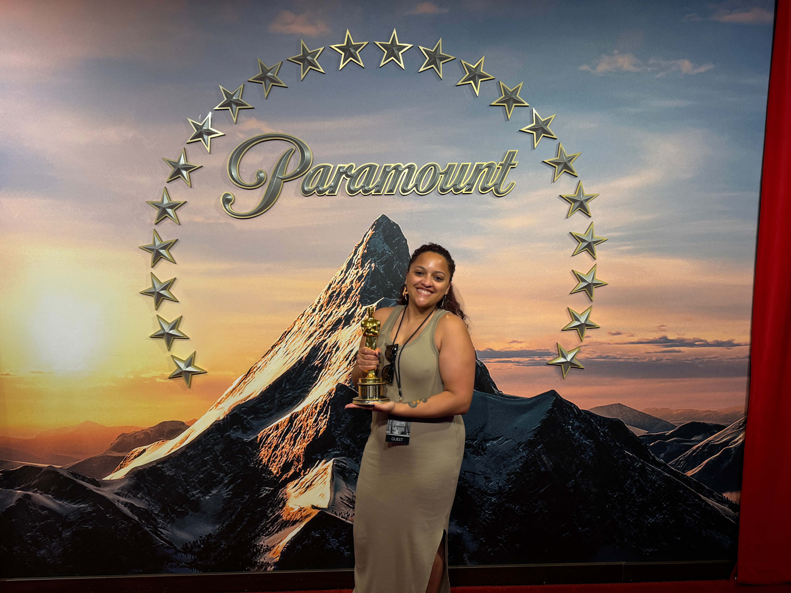

Senior Product & UX Designer
Kassandra
Rodriguez
Lead UX Designer & Strategist with 6+ years designing mission-critical products in highly regulated environments. Currently at Fresenius Medical Care, designing Class II/III medical devices for global clinical teams.

Design Philosophy
How I solve complex problems
I embed early with engineering, product, and clinical teams — asking uncomfortable questions before any wireframe is drawn.
Research-First Thinking
Every design decision is preceded by rigorous discovery — contextual inquiry, stakeholder interviews, and heuristic analysis that surface real constraints, not assumed ones.
Cross-Functional Fluency
I speak the language of engineers, clinicians, and product managers — translating between them to eliminate silos and accelerate delivery without sacrificing quality.
Atomic Design Systems
I build design systems that scale — grounded in atomic principles and rigorous documentation so teams ship faster and consistently across every surface.
Accessibility by Default
WCAG compliance isn't a retrofit — I embed inclusive design patterns from the first wireframe, ensuring products work for every user on every device.
Selected Work
Case studies that moved the needle
UX · Medical Device · Cross-Functional
Embedded Third-Party Sensor Data Integration for ICU Patient Monitor
Eliminated a secondary ICU display by integrating real-time hematocrit, SpO2, and blood volume data into a primary patient monitor — reducing cognitive load for nurses during critical therapy.
UX Research · Internationalization
Screen Design for Right-to-Left Languages
Rearchitected layout grids and component logic to support Arabic and Hebrew — a systems-level challenge requiring close partnership with l10n engineers.
Web · Visual Design
Non-Profit Website Redesign
Community-centered redesign of a non-profit digital presence — prioritizing accessibility and content clarity for a diverse audience.
Web · Visual Design
Local Non-Profit Website Redesign
Community-centered redesign of a non-profit's digital presence — prioritizing accessibility and content clarity for a diverse audience.
Web · Visual Design
Community Action Non-Profit Redesign
Accessible, community-centered redesign of a local non-profit site — content clarity for a diverse audience across ages and literacy levels.
My Process
How I move from problem to shipped
A repeatable, research-led framework refined across medical devices, consumer apps, and enterprise platforms — always calibrated to the team, timeline, and constraints.
Discover
Stakeholder interviews, contextual inquiry, competitive audit, and constraint mapping to frame the real problem.
Research · AlignmentDefine
Synthesize findings into opportunity areas, user needs, and success metrics that product and engineering agree on.
Synthesis · FramingIdeate
Cross-functional workshops and divergent sketching — I run sessions that bring engineers into the design process early.
Collaboration · ConceptsPrototype
High-fidelity, accessible prototypes with documented interaction specs — from Figma to coded components when needed.
Design · SystemsTest & Iterate
Moderated usability testing, A/B variants, and metrics review — closing the loop with data and shipping with confidence.
Validation · DeliveryExpertise
Tools & disciplines
Six years of experience across medical, consumer, and enterprise domains — always connecting design craft to business outcomes.
kassandra-photo.jpg
About
Designer, bridge builder, film enthusiast
I'm Kassandra — a Lead UX Designer & Strategist with 6+ years designing mission-critical products in highly regulated environments. I'm currently a UX Designer III at Fresenius Medical Care in Lawrence, MA, where I drive design strategy for Class II/III medical devices and software platforms serving global clinical teams.
I've architected design systems that reduced time-to-market by 40%, instituted continuous user research loops that cut critical task errors by 25%, and led cross-functional teams through FDA and ISO 62366 compliance — all while keeping the human at the center of every decision.
My background spans medical devices, EdTech, e-commerce, and non-profit — and a genuine love of film that has, not coincidentally, made me a better storyteller and a sharper systems thinker.
Earlier Work
Where the foundations were built
Learning projects from the Google UX Design Certificate and a UX Design Fellowship — included to show where the process started and how it has evolved.
Earlier Work
Where the craft began
Foundational projects from the Google UX Design Certificate and a UX Design Fellowship — included because process and growth are worth showing.
Kasanova Theater — Mobile Ticketing App
End-to-end iOS app design for a local cinema — screen reader–friendly, WCAG compliant, with digital ticketing and saved checkout state.
Unified Online Learning Platform
A desktop platform consolidating fragmented remote-education tools into one integrated workspace for educators and students.
Get In Touch
Let's build something meaningful together
I'm always open to conversations about senior design roles, consulting engagements, and cross-functional collaborations that push boundaries.